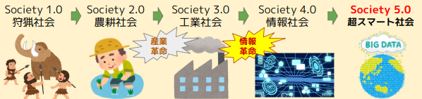

IoTについて
技術の概要説明
ここには、指定されたテーマがどのような技術であるかを分かりやすく書きます。
本サンプルでは、テーマに関係したものを書いていませんが、みなさんは自分のテーマに合わせて文章を書いてください。
Society 5.0

現在の利用場面
ここには、指定されたテーマの技術が社会の中でどのように活用されているのかを書きます。
今後の展望
ここには、指定されたテーマの技術の現在の課題、今後、社会にどのような影響を与えていくか、現在の社会のどのような問題を解決できることが期待されているかなどについて、さまざまな情報を参照して自分の考えを書きます。
参考文献・参考Webサイト